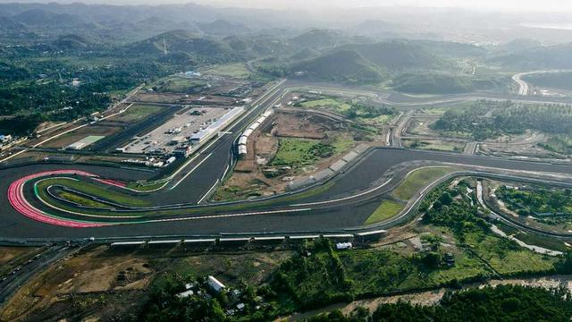
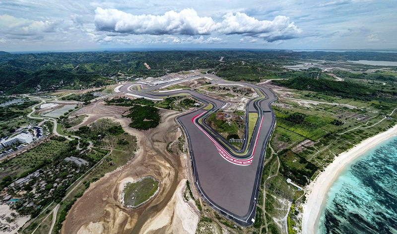

Tentang
Sirkuit ini pada awalnya dikabarkan memiliki panjang 4,8 km, tetapi berubah menjadi 4,32 km dengan 19 tikungan. Desain sirkuit kemudian diperpendek lagi menjadi 4,31 km dengan 17 tikungan. Saat peresmian, sirkuit ini memiliki panjang 4,31 km dengan 17 tikungan, dengan kapasitas 50.000 tempat duduk di grandstand dan total mencapai 195.700 orang... Baca selanjutnya
Sejarah
Rencana pembangunan sirkuit dimulai pada 20 Januari 2017, dimana dilakukan penandatanganan MoU antara ITDC dengan Roadgrip Motorsports. November 2017, Vinci Grand Construction Projects menandatangani kontrak pembangunan sirkuit MotoGP di Kawasan Ekonomi Khusus Mandalika, Lombok. Sirkuit Mandalika direncanakan mulai dibangun pada 2018. Vinci membangun Sirkuit dengan nilai investasi US$ 500 juta. Pembangunan direncanakan akan memakan 3,6 triliun. Menurut Direktur Konstruksi dan Operasi Indonesia Tourism Development Corporation (ITDC), Ngurah Wirawan, dana akan diperoleh dari pinjaman Asian Infrastructure Investment Bank (AIIB) secara bertahap sampai tahun 2023... Baca selanjutnya